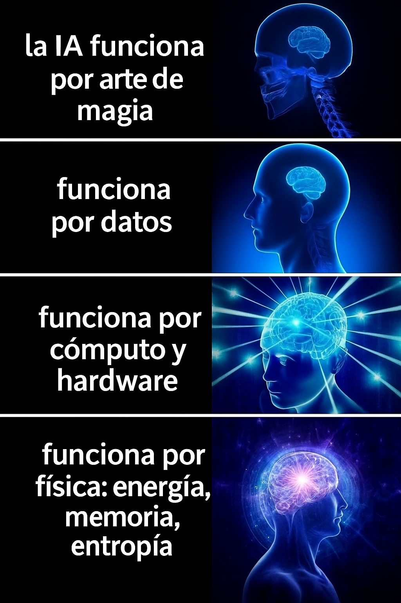

estrategIA #109 ·
Lo que hay debajo de la magia
El contexto
La IA no funciona por magia: necesita datos y máquinas, y su diseño se apoya también en la física. La escala de cerebros va añadiendo esas explicaciones. El artículo presentaba, entre otros conceptos, la entropía: una medida de incertidumbre que ayuda a analizar la información.
Publicado en: estrategIA #109 — El motor oculto de la inteligencia artificial: por qué la física está en el centro del avance actual
Leer el texto de la imagen
la IA funciona por arte de magia funciona por datos funciona por cómputo y hardware funciona por física: energía, memoria, entropía